User Guide
YRK PDF
A free PDF program for Windows: read, edit, fill in forms, sign, organize pages, convert files and measure drawings. Everything runs on your own computer.
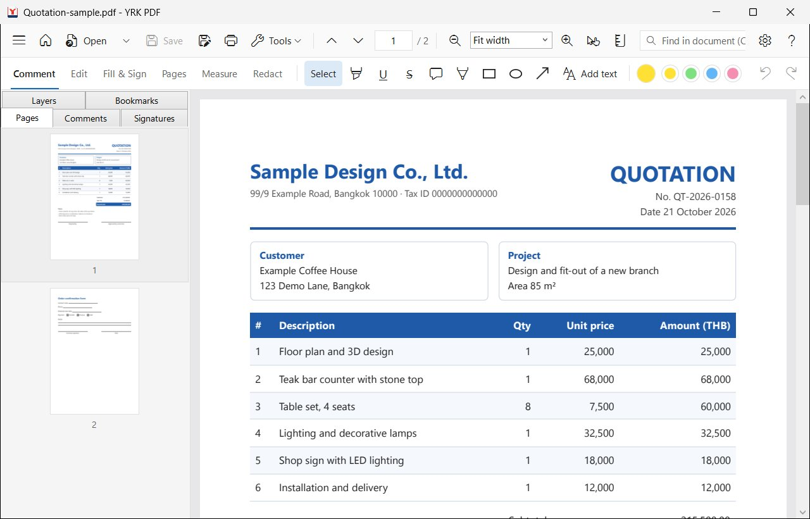
Version {{version}} · pdf.yrklab.com

A free PDF program for Windows: read, edit, fill in forms, sign, organize pages, convert files and measure drawings. Everything runs on your own computer.

YRK PDF is free, with no ads and no account, and it never sends your files anywhere.
With no file open, or after the house button, the start page shows every tool, grouped by task. Click a card to start.
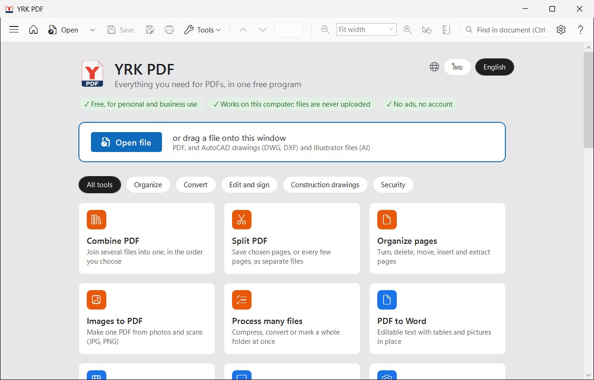
Before using OCR text, read OCR limitations and always check the result.
Reading marks help you return to pages you want to read again. The Bookmarks tab shows the document outline supplied by the PDF's author.
Reading marks are stored only on this computer, not in the PDF, so they also work with signed or read-only files. You can save up to 100 marks per file for the 200 most recently opened files.
When you insert, move or delete pages, reading mark page numbers follow along and are saved with the document. Deleting a marked page also deletes its mark; Undo restores it with that step. If you discard unsaved page changes, marks return to match the original file. When you save as a new name, the marks go with the new file.
The Comment tab is for reviewing, marking up and leaving notes. Other PDF programs, Adobe Acrobat included, show them too.
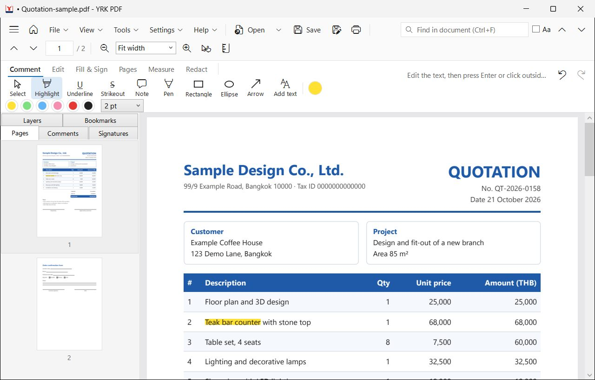
Change words in the PDF itself, Thai included. The new words are real text that can be searched and copied.
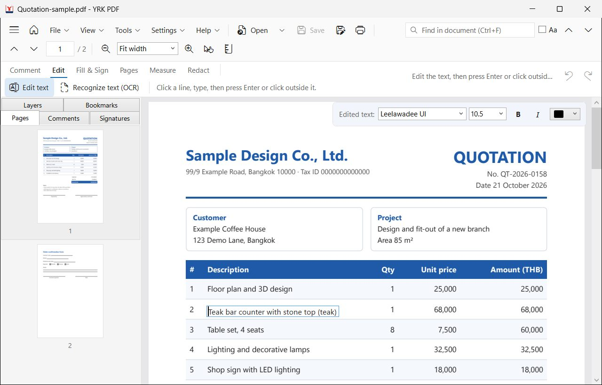
The document's own font is used when it is installed on this PC. Otherwise a similar font is chosen and sized to look as tall. While typing, the bar at the top of the page changes the font, size, bold, italic and colour.
If the PDF has form fields, click one and type. Thai shows correctly, and the form can be filled on in Adobe Acrobat as usual.
Amounts in words: type an amount such as 10000 in a field (or in added text), right-click and choose Amount in Thai words for "หนึ่งหมื่นบาทถ้วน", or Amount in English words for "Ten Thousand Baht Only". Satang are written too (1234.50 is "หนึ่งพันสองร้อยสามสิบสี่บาทห้าสิบสตางค์").
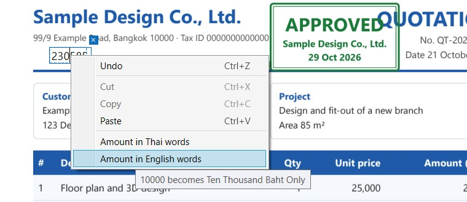
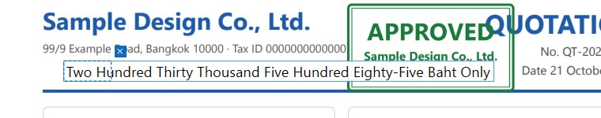
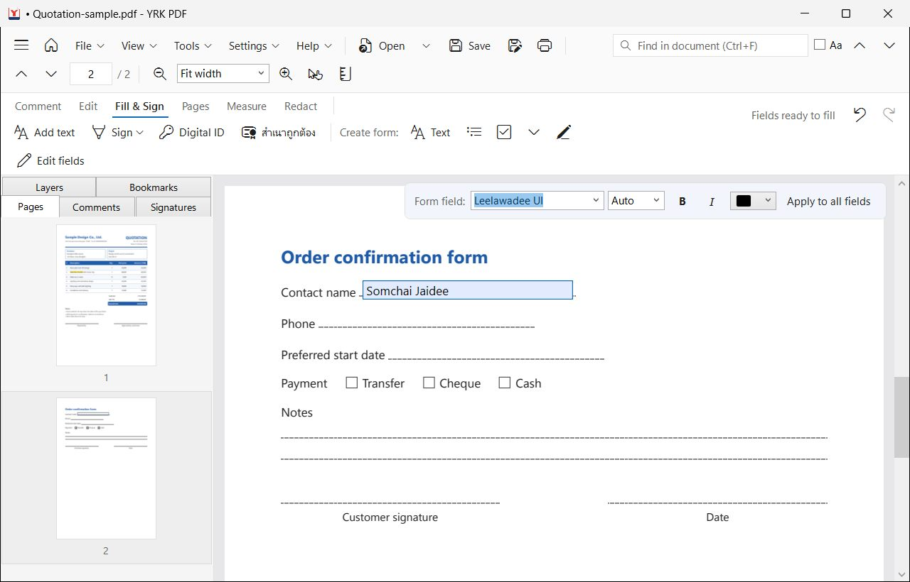
The Amount in words card in the home page's Accounting group, or Insert → Amount in words…, turns an amount into Thai and English words to copy or put on the page. In a form field or added text, a button appears under the box when you type an amount; right-clicking the number works too, also on added text already placed.
The Insert menu in the top row (Alt+I) has everything that can be added to a file in one place: text, pictures, symbols, signatures, stamps, lines, arrows, shapes, the pen, notes, pages from another file, watermarks and page numbers.
สำเนาถูกต้อง stamps "สำเนาถูกต้อง" (certified true copy) on a copy of an ID card or document, with your signature. Write what the copy is for, such as a job application, so it cannot be reused elsewhere, and add today's date if you like.
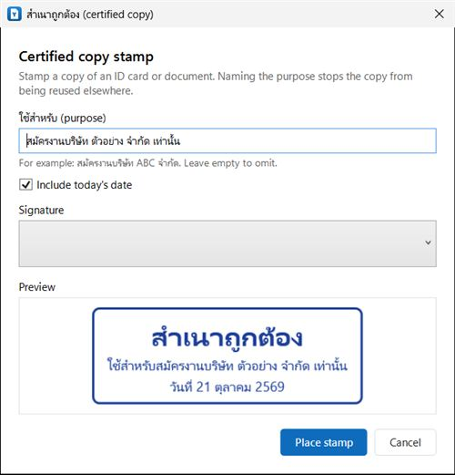
Rubber stamp has the stamps offices use every day: approved, received, paid, checked, original, copy, urgent, cancelled and confidential, with the date (Thai Buddhist year or English). Choose Thai, English, or both (the Thai word with the English one under it). Pick another date, change the words, colour and shape, or add small lines under the word, such as your company name or "by ......", then click Save to my stamps to use it again.
Click on the page to place the stamp; drag to move or resize it. Use the Rotate handle above the box to rotate freely (hold Shift to snap to 15° steps), or press Rotate 90° clockwise (the ↻ 90° button), and use the ◐ button to set opacity from 10–100%. Its words are saved as real text, so they can be searched and copied.
Open the Edit tab and click an item placed by YRK and saved in the file to move, rotate, change its opacity or delete it (Ctrl+Z undoes the change). Pictures not placed by YRK can only be deleted. Saved items cannot yet be resized.
Items saved in version 1.2.0 can only be made fainter. Editing a digitally signed file may make the signature report that the document changed after signing.
To stamp a whole document, choose Same place on every page and click once: the stamp goes on every page (one Undo removes them all). Stamp many files at once… stamps a list of files or a folder, at a corner of the first or every page, and saves the results as new files.
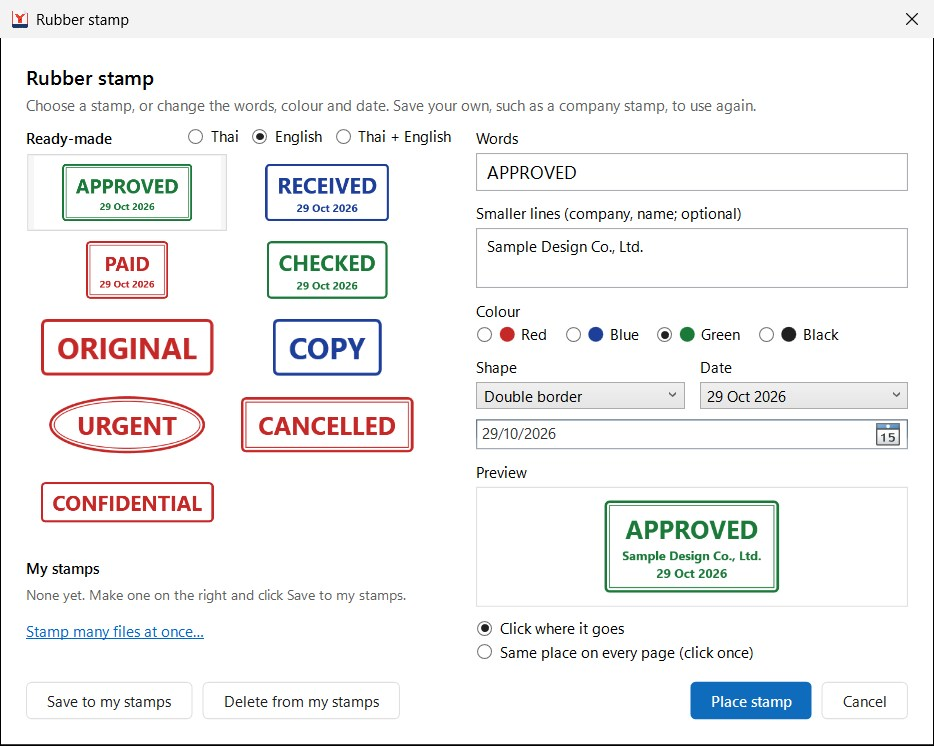
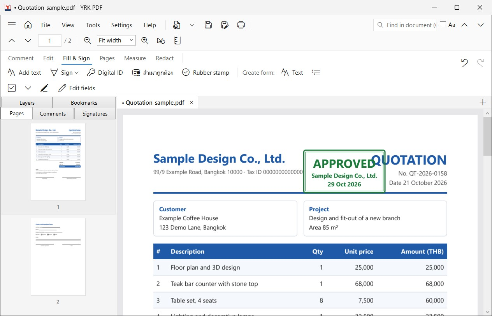
A digital signature (PAdES) proves who signed and shows whether the document changed afterwards. Press Digital ID and choose an ID on a USB token, add a .pfx file from your certificate authority, or create your own. Choose whether the signature shows on the page and whether to add a trusted timestamp (needs internet). Signatures in a file are listed in the sidebar's Signatures tab.
Trusted certificates: In the Signatures panel, you can trust a signer using a self-signed certificate after checking its SHA-256 fingerprint with the owner through another channel. The status becomes Valid: you chose to trust this signer. This trust applies only in YRK on this computer; Acrobat may still show an unknown signer. Manage the list with the My trusted certificates button on the Fill & Sign tab: use Import .cer / .crt…, select a certificate and press Certificate to view it, or Delete to remove it. In your Digital ID details, open Certificate details… to see its fingerprint and use Export certificate (.cer) to export your public certificate.
What the statuses mean:
Backing up or deleting an ID: select an ID file in the digital signature window, enter its password, and press Back up this ID… or Delete this ID…. Documents already signed stay valid, but a deleted ID can sign nothing more; its file goes to the Recycle Bin. Certificates in Windows and USB tokens are managed with Windows or their issuer's tools.
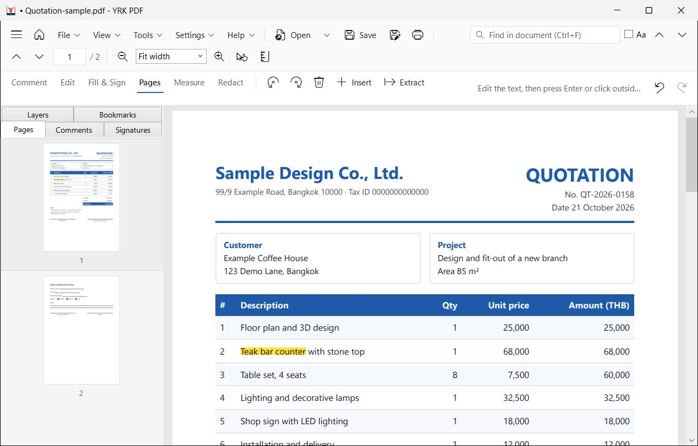
Tools → Clean up scan (straighten, edges, blank pages)… (or the Clean up scans card on the home page) checks every page and shows what it found; tick what to fix:
Ctrl+Z puts everything back, and the file only changes when you save.
Press Delete on the thumbnail list to remove selected pages. Ctrl+C/X/V act on pages only while the thumbnail list has focus; in text fields they continue to copy, cut and paste text.
PDF permissions apply: the source must allow copying or extracting pages, and the destination must allow page changes. Signatures from the source do not travel with copied pages. If copied pages are no longer available, copy them again from the source.
Choose Tools → Watermark, header/footer and page numbers…. Type in Watermark text and press Enter for a new line, or choose Fit to page to wrap at spaces automatically, up to four lines.
Watermarks appear over the content by default. Adjust Opacity and Angle; to put the watermark behind the content, choose Behind content.
Editable text with tables and pictures in place
Tables as cells; amounts as numbers you can add up
One slide per page, looking just like the PDF
Each page as a PNG or JPG picture
Start from the cards on the start page, or File → Export.
Tools → Compress this PDF…, then choose:
A new copy is always saved; the original does not change. Photos and scans shrink a lot; files of plain text shrink little.
Makes scans searchable and copyable, in Thai and English. It is on the Edit tab and in the Tools menu.
Use OCR to read text from scanned PDFs or images and reduce retyping. Choose searchable PDF, editable Word document or plain text as the output.
Password-protected PDFs cannot be made searchable yet; save an unprotected copy first. For signed files, convert first and sign the output file afterwards.
Tip: scan at 300 dpi and keep the page straight. This advice applies when scanning to PDF, recognizing text from images and converting scanned documents.
The long-term archive format many offices ask for: Tools → Save as PDF/A (for archiving)…
Tools → Process many files… compresses, converts, watermarks or rubber-stamps a whole folder in one go.
Makes a Thai tax invoice as PDF/A-3 with the Revenue Department's XML (ETDA standard ขมธอ. 3-2560) inside: the e-Tax Invoice card in the home page's Accounting group, or Tools → e-Tax Invoice…
Addresses and postcodes

Sending it to the buyer:
DWG and DXF files open without AutoCAD. The drawing is shown like a PDF, at its scale, and layers can be shown or hidden in the sidebar's Layers tab.
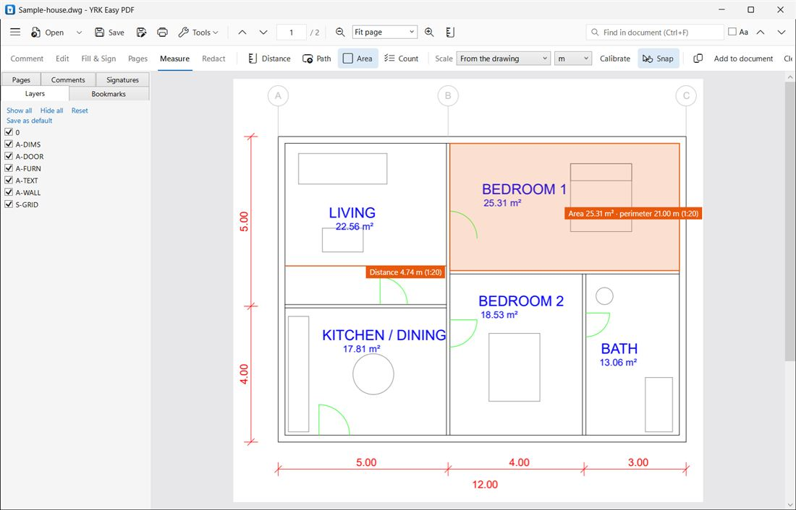
Name a type, such as "Door" or "Light", and click each one on the drawing. Numbered marks are added; copy the list into Excel or save it as a file.
Tools → Compare with another version… shows what changed between two revisions.
Open Settings → Privacy and safety… and choose Back up data… to save selected stamps, signature images, Digital IDs, trusted certificates, e-Tax settings, reading marks and general settings in an encrypted file. Choose a password of at least 12 characters and keep the file and password safe. The backup password cannot be recovered, and each Digital ID file has its own password.
Choose Import data…, select the backup, enter its password and press Check contents before Import data. The app first backs up your current data using the same password; if that backup cannot be verified, import stops. Close and reopen YRK PDF after importing.
Protecting an already signed file removes its signatures, and the app warns before doing it.
Redaction also removes from the whole file:
Everything happens on your computer: no file uploads, no usage statistics, and no AI. The program uses the internet for update checks and, only after asking you first, downloads OCR language data or the data needed to straighten scans automatically from the same designated source. It may also use the internet for digital-signature timestamps, certificate validation and revocation checks. It never sends document contents. The update check can be turned off in Settings → Privacy and safety…
Read the full privacy policy in the program at Help → Privacy policy (no internet needed), and on the YRK PDF website.
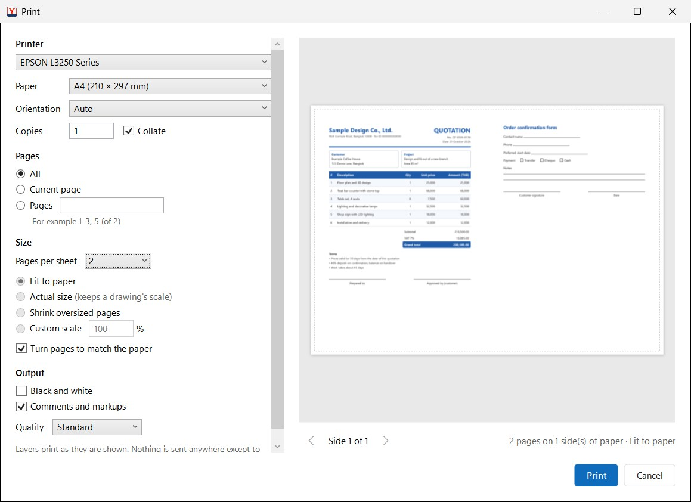
If update checks are allowed, a new version is downloaded for you and a button offers to restart into it. Every version is signed by the developer; a file whose signature does not check out is never installed. Updates are downloaded as full files, so they may be a bit larger. Check now in Settings → Updates…
The same list is in the program: Help → Keyboard shortcuts.
| Keys | What it does |
|---|---|
| F1 | Open this guide |
| Ctrl+O | Open |
| Ctrl+S | Save |
| Ctrl+Shift+S | Save a copy |
| Ctrl+P | |
| Ctrl+W | Close file |
| Ctrl+Shift+T | Reopen closed file |
| Ctrl+Z / Ctrl+Y | Undo / Redo |
| Ctrl+C | Copy selected text, or selected pages when the thumbnail list has focus |
| Ctrl+X | Cut selected pages when the thumbnail list has focus |
| Ctrl+V | Paste copied pages or a copied PDF when the thumbnail list has focus |
| Ctrl+D | Add or edit a reading mark on the current page |
| Delete | Delete the selected item, including pages when the thumbnail list has focus |
| Esc | Cancel |
| Ctrl+F | Find in document |
| F3 / Shift+F3 | Next / previous result |
| Ctrl++ / Ctrl+- | Zoom in / out |
| Ctrl+0 / 1 / 2 | Fit page / actual size / fit width |
| Ctrl+Home / End | First / last page |
| H, or hold Space | Hand tool |
| Ctrl+R | Rulers |
| Alt+F V T S H | File, View, Tools, Settings, Help menus |
| Shift (measuring) | Keep lines at 45° steps |
| Enter (measuring) | Finish an area or path |
The Error dialog shows a message, a code such as YRK-PAGE-006, and What you can do:. Try the suggested steps first. Look up the code in the Error codes appendix.
If the problem continues, press Copy info for problem report in the error dialog, or choose Help → Copy info for problem report. Review the information, then paste it into a message to the developer yourself. Nothing is sent automatically; error details are logged only on this computer.
The program does not have a paid developer certificate yet. Press More info, then Run anyway. Only download from the official website.
The file is a scan. Run Recognize text (OCR) first.
The document's font is not installed on this PC, so a similar one is used. Install that font, or choose one in the bar at the top of the page.
The file may be open in another program. Your work is then saved under a new name next to it, so nothing is lost.
Help → Support the developer… opens an in-program window with a PromptPay QR code; opening it uses no internet. Ko-fi and GitHub Sponsors open a web browser only when pressed. Ko-fi accepts credit/debit cards and payments in Thai baht. The program is fully usable for free without supporting it.
YRK PDF is made by YRK LAB — Your Reliable Kit · Free software under the Apache-2.0 license
These codes, messages and suggestions come from the error catalog in docs/error-codes.md. If the problem continues, use Copy info for problem report and contact the developer.
| Code | Message | What you can do |
|---|---|---|
| YRK-FILE-001 | The recent file is no longer available. It was removed from the recent list. | Locate the file and open it again. |
| YRK-FILE-002 | The document could not be opened. | Check that the file is readable and try again. |
| YRK-FILE-003 | The Illustrator document could not be opened. | Save it in Illustrator with Create PDF Compatible File enabled, then try again. |
| YRK-FILE-004 | The document could not be saved. | Check folder access and try saving again. |
| YRK-FILE-005 | The original could not be replaced. A separate copy was saved. | Check the saved copy, then close other programs using the original and save again. |
| YRK-FILE-006 | The unsaved document could not be recovered. | Try recovery again or open your latest saved copy. |
| YRK-FILE-007 | The link or folder could not be opened. | Check the default app and access permissions, then try again. |
| Code | Message | What you can do |
|---|---|---|
| YRK-PAGE-001 | A PDF must keep at least one page. | Keep one page and select the other pages to delete. |
| YRK-PAGE-002 | The combined PDF cannot replace an input file. | Choose a new name for the combined PDF. |
| YRK-PAGE-003 | The PDF operation could not be completed. | Check the source documents and try again. |
| YRK-PAGE-004 | The output cannot replace the open document. | Choose another name, or use Save to update the open document. |
| YRK-PAGE-005 | The page range is invalid. | 1-3, 5 Enter page numbers within the document, for example 1-3, 5. |
| YRK-PAGE-006 | The copied pages are no longer available. Please copy them again. | Copy the pages again from the source document. |
| YRK-PAGE-007 | The page clipboard could not be accessed. | Try copying or pasting the pages again. |
| YRK-PAGE-008 | The source document does not allow copying or extracting pages. | Open the source document with its owner password before copying pages. |
| Code | Message | What you can do |
|---|---|---|
| YRK-EXP-001 | This document cannot be saved as PDF/A without changing its appearance. Nothing was saved. | Use a regular PDF or adjust the document before trying PDF/A again. |
| YRK-EXP-002 | The PDF/A document could not be saved. | Check folder access and try again. |
| YRK-EXP-003 | The document could not be exported. | Check the export settings and destination folder, then try again. |
| Code | Message | What you can do |
|---|---|---|
| YRK-PRN-001 | The document could not be printed. | Check the printer connection and paper, then try again. |
| YRK-PRN-002 | The printers could not be listed. | Check Windows printer settings and reopen the print dialog. |
| YRK-PRN-003 | The printer is not available. | Turn on the printer or select another printer. |
| Code | Message | What you can do |
|---|---|---|
| YRK-BAT-001 | The output folder could not be used. | Choose a writable folder and try again. |
| YRK-BAT-002 | Some files could not be processed. | Check the source files and job settings, then try again. |
| YRK-BAT-003 | None of the first files could be opened for the preview. | Choose readable PDF files and try again. |
| YRK-BAT-004 | A file is protected against this change. | Unlock it with the owner password before processing it. |
| YRK-BAT-005 | A file needs a password to open. | Open and unlock the file before processing it. |
| Code | Message | What you can do |
|---|---|---|
| YRK-CAD-001 | The CAD drawing could not be opened. | Check that the drawing is a supported DWG or DXF file and try again. |
| Code | Message | What you can do |
|---|---|---|
| YRK-EDIT-001 | The annotation could not be changed. | Try the change again or reopen the document. |
| YRK-EDIT-002 | The picture could not be added. | Choose a readable image file and try again. |
| YRK-EDIT-003 | The changes could not be applied. | Try again. If needed, save a copy and reopen it. |
| YRK-EDIT-004 | This editing step could not be restored. | Try again or reopen your latest saved copy. |
| YRK-EDIT-005 | The document operation failed. | Check the document and operation settings, then try again. |
| YRK-EDIT-006 | The count list could not be saved. | Choose a writable folder and try again. |
| YRK-EDIT-007 | This page could not be compared. | Try another page or reopen both documents. |
| YRK-EDIT-008 | The text could not be changed. | If the font cannot be edited or the text overlaps an image, use a white box and Add text instead. |
| YRK-EDIT-009 | The form fields could not be added. | Check the document and try adding the fields again. |
| YRK-EDIT-010 | The saved item could not be changed safely. | Try another item or save a copy before editing again. |
| Code | Message | What you can do |
|---|---|---|
| YRK-SIG-023 | The signature could not be saved for later use. | Check access to the signature folder and try again. |
| YRK-SIG-024 | The saved signature could not be deleted. | Check access to the signature folder and try again. |
| YRK-SIG-025 | The certificate revocation list could not be downloaded. | Check the internet connection, or sign without long-term validation. |
| YRK-SIG-026 | The certificate revocation list was downloaded but could not be validated. | Try again later, or sign without long-term validation. |
| YRK-SIG-001 | The certificate could not be trusted. | Try adding the certificate again. |
| YRK-SIG-002 | The signed version could not be opened. | Try again or save a copy first. |
| YRK-SIG-003 | No version before signing is stored in this file. | Use an earlier backup of the document. |
| YRK-SIG-004 | The version before signing cannot be saved because the signature data is invalid. | Use an earlier backup of the document. |
| YRK-SIG-005 | The version before signing cannot replace the open document. | Choose a different file name. |
| YRK-SIG-006 | The version before signing could not be saved. | Choose another folder and try again. |
| YRK-SIG-007 | The certificate could not be exported. | Choose another folder and try again. |
| YRK-SIG-008 | The certificate could not be opened. | Choose a valid digital ID and try again. |
| YRK-SIG-009 | The digital ID could not be created. | Check the information and try again. |
| YRK-SIG-010 | The digital ID password is incorrect. | Enter the correct password and try again. |
| YRK-SIG-011 | The digital ID could not be copied. | Choose another folder and try again. |
| YRK-SIG-012 | The digital ID password could not be changed. | Check the current password and try again. |
| YRK-SIG-013 | Enter the password of this ID first. | Type the digital ID password and try again. |
| YRK-SIG-014 | The digital ID could not be added. | Choose a valid digital ID file and try again. |
| YRK-SIG-015 | Choose a digital ID first. | Select a digital ID from the list. |
| YRK-SIG-016 | The timestamp server address is invalid. | Enter a valid HTTP or HTTPS address. |
| YRK-SIG-017 | This ID has no private key, so it cannot sign. | Choose a digital ID with a private key. |
| YRK-SIG-018 | This digital ID has expired. | Choose a valid digital ID. |
| YRK-SIG-019 | This ID is not valid yet. | Check the computer date or choose another digital ID. |
| YRK-SIG-020 | The file could not be used as a signature. | Choose another image or PDF file. |
| YRK-SIG-021 | The trusted certificates could not be updated. | Check access to the certificate files and try again. |
| YRK-SIG-022 | The digital IDs could not be loaded. | Check access to the digital ID files and try again. |
| Code | Message | What you can do |
|---|---|---|
| YRK-APP-004 | YRK PDF could not restart. | Close and reopen the app when you are ready. |
| YRK-APP-001 | Something went wrong while using the app. | Try again. If the problem continues, copy the problem report and contact support. |
| YRK-APP-002 | The app encountered a problem and needs to close. | Restart the app. If recovery is offered, recover your unsaved work. |
| YRK-APP-003 | A background task could not be completed. | Try the operation again. If the problem continues, copy the problem report and contact support. |
| Code | Message | What you can do |
|---|---|---|
| YRK-SCN-001 | No scanner found. | Connect your scanner and try again. |
| YRK-SCN-002 | The scanner is busy. Scanned pages have been kept. | Wait and try again. |
| YRK-SCN-003 | Paper is jammed. Scanned pages have been kept. | Clear the paper and try Scan more. |
| YRK-SCN-004 | The feeder is empty. | Put paper in the feeder and try again. |
| YRK-SCN-005 | The feeder is empty. Scanned pages have been kept. | Add more paper and try Scan more, or create a file from the scanned pages. |
| YRK-SCN-006 | Scanning cancelled. Scanned pages have been kept. | Try Scan more, or create a file from the scanned pages. |
| YRK-SCN-007 | The scanner is not ready. | Check its power and connection, then find scanners again. |
| YRK-SCN-008 | The scanner connection was lost. | Check the USB cable and turn on the scanner, then press Find scanners again. |
| YRK-SCN-009 | The scanner reported an error. | Try scanning again. |
| YRK-SCN-010 | The scanned pages could not be saved. | Choose another folder and try again. If the problem continues, copy the problem report. |
| Code | Message | What you can do |
|---|---|---|
| YRK-SEC-001 | The protected document could not be read. | Check access to the document and try again. |
| YRK-SEC-002 | The document could not be unlocked. | Check the password and try again. |
| YRK-SEC-003 | The search for text to redact failed. | Try searching again. |
| Code | Message | What you can do |
|---|---|---|
| YRK-UPD-001 | The update download timed out. | Check the internet connection and try again. |
| YRK-UPD-002 | An update was found, but it was not signed by YRK. It was deleted and not installed. | Try checking for updates again later. |
| YRK-UPD-003 | Updates could not be checked. | Check the internet connection and try again later. |
| YRK-UPD-004 | The update could not be installed. | Check for updates and download it again. |
| YRK-UPD-005 | An update was found, but it was not signed by YRK. It was not installed. The downloaded file could not be deleted. | Restart the computer, then check for updates again. |
| Code | Message | What you can do |
|---|---|---|
| YRK-OCR-001 | The language data could not be downloaded. | Check the internet connection and try again. |
| YRK-OCR-002 | Text recognition failed. The PDF was saved without searchable text. | Try recognizing text in the saved PDF again. |
| YRK-OCR-003 | The review page could not be displayed. | Try opening the review page again. |
| Code | Message | What you can do |
|---|---|---|
| YRK-CNV-001 | Choose at least one file, language and output format. | Select the missing options and try again. |
| YRK-CNV-002 | Conversion was interrupted unexpectedly. | Try converting the document again. |
| YRK-CNV-003 | The scanned document could not be converted. | Check that the file can be opened and try again. |
| YRK-CNV-004 | Some output files could not be created. | Check the results folder and try again. |
| YRK-CNV-005 | The files could not be added. | Check access to the files and try again. |
| YRK-CNV-006 | The results folder could not be opened. | File Explorer Open the results folder in File Explorer. |
| YRK-CNV-007 | The text could not be copied. | Try copying the text again. |
| YRK-CNV-008 | Password-protected PDFs cannot be made searchable yet. | Save an unprotected copy first. |
| YRK-CNV-009 | Every page already contains text. | Choose all pages to recognize the text again. |
| Code | Message | What you can do |
|---|---|---|
| YRK-FILE-001 | The recent file is no longer available. It was removed from the recent list. | Locate the file and open it again. |
| YRK-FILE-002 | The document could not be opened. | Check that the file is readable and try again. |
| YRK-FILE-003 | The Illustrator document could not be opened. | Save it in Illustrator with Create PDF Compatible File enabled, then try again. |
| YRK-FILE-004 | The document could not be saved. | Check folder access and try saving again. |
| YRK-FILE-005 | The original could not be replaced. A separate copy was saved. | Check the saved copy, then close other programs using the original and save again. |
| YRK-FILE-006 | The unsaved document could not be recovered. | Try recovery again or open your latest saved copy. |
| YRK-FILE-007 | The link or folder could not be opened. | Check the default app and access permissions, then try again. |
| Code | Message | What you can do |
|---|---|---|
| YRK-PAGE-001 | A PDF must keep at least one page. | Keep one page and select the other pages to delete. |
| YRK-PAGE-002 | The combined PDF cannot replace an input file. | Choose a new name for the combined PDF. |
| YRK-PAGE-003 | The PDF operation could not be completed. | Check the source documents and try again. |
| YRK-PAGE-004 | The output cannot replace the open document. | Choose another name, or use Save to update the open document. |
| YRK-PAGE-005 | The page range is invalid. | 1-3, 5 Enter page numbers within the document, for example 1-3, 5. |
| YRK-PAGE-006 | The copied pages are no longer available. Please copy them again. | Copy the pages again from the source document. |
| YRK-PAGE-007 | The page clipboard could not be accessed. | Try copying or pasting the pages again. |
| YRK-PAGE-008 | The source document does not allow copying or extracting pages. | Open the source document with its owner password before copying pages. |
| Code | Message | What you can do |
|---|---|---|
| YRK-EXP-001 | This document cannot be saved as PDF/A without changing its appearance. Nothing was saved. | Use a regular PDF or adjust the document before trying PDF/A again. |
| YRK-EXP-002 | The PDF/A document could not be saved. | Check folder access and try again. |
| YRK-EXP-003 | The document could not be exported. | Check the export settings and destination folder, then try again. |
| Code | Message | What you can do |
|---|---|---|
| YRK-PRN-001 | The document could not be printed. | Check the printer connection and paper, then try again. |
| YRK-PRN-002 | The printers could not be listed. | Check Windows printer settings and reopen the print dialog. |
| YRK-PRN-003 | The printer is not available. | Turn on the printer or select another printer. |
| Code | Message | What you can do |
|---|---|---|
| YRK-BAT-001 | The output folder could not be used. | Choose a writable folder and try again. |
| YRK-BAT-002 | Some files could not be processed. | Check the source files and job settings, then try again. |
| YRK-BAT-003 | None of the first files could be opened for the preview. | Choose readable PDF files and try again. |
| YRK-BAT-004 | A file is protected against this change. | Unlock it with the owner password before processing it. |
| YRK-BAT-005 | A file needs a password to open. | Open and unlock the file before processing it. |
| Code | Message | What you can do |
|---|---|---|
| YRK-CAD-001 | The CAD drawing could not be opened. | Check that the drawing is a supported DWG or DXF file and try again. |
| Code | Message | What you can do |
|---|---|---|
| YRK-EDIT-001 | The annotation could not be changed. | Try the change again or reopen the document. |
| YRK-EDIT-002 | The picture could not be added. | Choose a readable image file and try again. |
| YRK-EDIT-003 | The changes could not be applied. | Try again. If needed, save a copy and reopen it. |
| YRK-EDIT-004 | This editing step could not be restored. | Try again or reopen your latest saved copy. |
| YRK-EDIT-005 | The document operation failed. | Check the document and operation settings, then try again. |
| YRK-EDIT-006 | The count list could not be saved. | Choose a writable folder and try again. |
| YRK-EDIT-007 | This page could not be compared. | Try another page or reopen both documents. |
| YRK-EDIT-008 | The text could not be changed. | If the font cannot be edited or the text overlaps an image, use a white box and Add text instead. |
| YRK-EDIT-009 | The form fields could not be added. | Check the document and try adding the fields again. |
| YRK-EDIT-010 | The saved item could not be changed safely. | Try another item or save a copy before editing again. |
| Code | Message | What you can do |
|---|---|---|
| YRK-SIG-023 | The signature could not be saved for later use. | Check access to the signature folder and try again. |
| YRK-SIG-024 | The saved signature could not be deleted. | Check access to the signature folder and try again. |
| YRK-SIG-025 | The certificate revocation list could not be downloaded. | Check the internet connection, or sign without long-term validation. |
| YRK-SIG-026 | The certificate revocation list was downloaded but could not be validated. | Try again later, or sign without long-term validation. |
| YRK-SIG-001 | The certificate could not be trusted. | Try adding the certificate again. |
| YRK-SIG-002 | The signed version could not be opened. | Try again or save a copy first. |
| YRK-SIG-003 | No version before signing is stored in this file. | Use an earlier backup of the document. |
| YRK-SIG-004 | The version before signing cannot be saved because the signature data is invalid. | Use an earlier backup of the document. |
| YRK-SIG-005 | The version before signing cannot replace the open document. | Choose a different file name. |
| YRK-SIG-006 | The version before signing could not be saved. | Choose another folder and try again. |
| YRK-SIG-007 | The certificate could not be exported. | Choose another folder and try again. |
| YRK-SIG-008 | The certificate could not be opened. | Choose a valid digital ID and try again. |
| YRK-SIG-009 | The digital ID could not be created. | Check the information and try again. |
| YRK-SIG-010 | The digital ID password is incorrect. | Enter the correct password and try again. |
| YRK-SIG-011 | The digital ID could not be copied. | Choose another folder and try again. |
| YRK-SIG-012 | The digital ID password could not be changed. | Check the current password and try again. |
| YRK-SIG-013 | Enter the password of this ID first. | Type the digital ID password and try again. |
| YRK-SIG-014 | The digital ID could not be added. | Choose a valid digital ID file and try again. |
| YRK-SIG-015 | Choose a digital ID first. | Select a digital ID from the list. |
| YRK-SIG-016 | The timestamp server address is invalid. | Enter a valid HTTP or HTTPS address. |
| YRK-SIG-017 | This ID has no private key, so it cannot sign. | Choose a digital ID with a private key. |
| YRK-SIG-018 | This digital ID has expired. | Choose a valid digital ID. |
| YRK-SIG-019 | This ID is not valid yet. | Check the computer date or choose another digital ID. |
| YRK-SIG-020 | The file could not be used as a signature. | Choose another image or PDF file. |
| YRK-SIG-021 | The trusted certificates could not be updated. | Check access to the certificate files and try again. |
| YRK-SIG-022 | The digital IDs could not be loaded. | Check access to the digital ID files and try again. |
| Code | Message | What you can do |
|---|---|---|
| YRK-APP-004 | YRK PDF could not restart. | Close and reopen the app when you are ready. |
| YRK-APP-001 | Something went wrong while using the app. | Try again. If the problem continues, copy the problem report and contact support. |
| YRK-APP-002 | The app encountered a problem and needs to close. | Restart the app. If recovery is offered, recover your unsaved work. |
| YRK-APP-003 | A background task could not be completed. | Try the operation again. If the problem continues, copy the problem report and contact support. |
| Code | Message | What you can do |
|---|---|---|
| YRK-SCN-001 | No scanner found. | Connect your scanner and try again. |
| YRK-SCN-002 | The scanner is busy. Scanned pages have been kept. | Wait and try again. |
| YRK-SCN-003 | Paper is jammed. Scanned pages have been kept. | Clear the paper and try Scan more. |
| YRK-SCN-004 | The feeder is empty. | Put paper in the feeder and try again. |
| YRK-SCN-005 | The feeder is empty. Scanned pages have been kept. | Add more paper and try Scan more, or create a file from the scanned pages. |
| YRK-SCN-006 | Scanning cancelled. Scanned pages have been kept. | Try Scan more, or create a file from the scanned pages. |
| YRK-SCN-007 | The scanner is not ready. | Check its power and connection, then find scanners again. |
| YRK-SCN-008 | The scanner connection was lost. | Check the USB cable and turn on the scanner, then press Find scanners again. |
| YRK-SCN-009 | The scanner reported an error. | Try scanning again. |
| YRK-SCN-010 | The scanned pages could not be saved. | Choose another folder and try again. If the problem continues, copy the problem report. |
| Code | Message | What you can do |
|---|---|---|
| YRK-SEC-001 | The protected document could not be read. | Check access to the document and try again. |
| YRK-SEC-002 | The document could not be unlocked. | Check the password and try again. |
| YRK-SEC-003 | The search for text to redact failed. | Try searching again. |
| Code | Message | What you can do |
|---|---|---|
| YRK-UPD-001 | The update download timed out. | Check the internet connection and try again. |
| YRK-UPD-002 | An update was found, but it was not signed by YRK. It was deleted and not installed. | Try checking for updates again later. |
| YRK-UPD-003 | Updates could not be checked. | Check the internet connection and try again later. |
| YRK-UPD-004 | The update could not be installed. | Check for updates and download it again. |
| YRK-UPD-005 | An update was found, but it was not signed by YRK. It was not installed. The downloaded file could not be deleted. | Restart the computer, then check for updates again. |
| Code | Message | What you can do |
|---|---|---|
| YRK-OCR-001 | The language data could not be downloaded. | Check the internet connection and try again. |
| YRK-OCR-002 | Text recognition failed. The PDF was saved without searchable text. | Try recognizing text in the saved PDF again. |
| YRK-OCR-003 | The review page could not be displayed. | Try opening the review page again. |
| Code | Message | What you can do |
|---|---|---|
| YRK-CNV-001 | Choose at least one file, language and output format. | Select the missing options and try again. |
| YRK-CNV-002 | Conversion was interrupted unexpectedly. | Try converting the document again. |
| YRK-CNV-003 | The scanned document could not be converted. | Check that the file can be opened and try again. |
| YRK-CNV-004 | Some output files could not be created. | Check the results folder and try again. |
| YRK-CNV-005 | The files could not be added. | Check access to the files and try again. |
| YRK-CNV-006 | The results folder could not be opened. | File Explorer Open the results folder in File Explorer. |
| YRK-CNV-007 | The text could not be copied. | Try copying the text again. |
| YRK-CNV-008 | Password-protected PDFs cannot be made searchable yet. | Save an unprotected copy first. |
| YRK-CNV-009 | Every page already contains text. | Choose all pages to recognize the text again. |